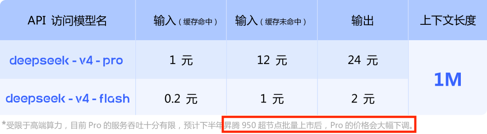
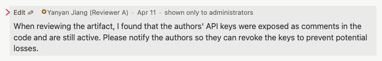
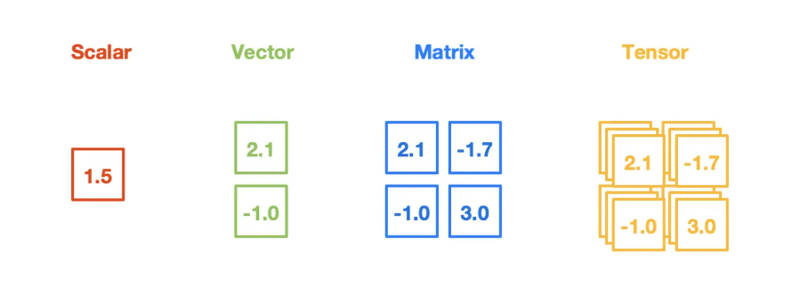
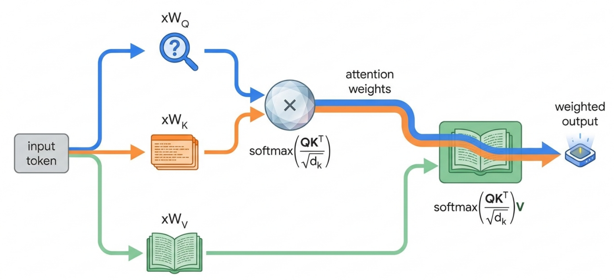
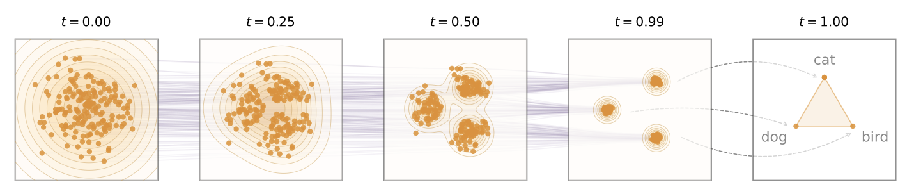

一个 Token 的旅程
Review & Comments
回顾 “并发编程”
- 从
spawn(T_worker)和 join 开始- 一切的基础：计算图模型
- 共享内存、互斥锁、条件变量、信号量的底层机制
- 面向 “异构” 复杂 T_worker 的改进
- 关键问题：管理状态、同步、复杂性
- Coroutine, goroutine
- Promise, async/await
- 关键问题：管理状态、同步、复杂性
- 面向 “同构” 小而短 T_worker 的改进
- 关键问题：最大化计算密度和能效比
- SIMD (数据并行)
- 从图形处理器到到 CUDA/SIMT
- 关键问题：最大化计算密度和能效比
并发部分的最后一课
- 让我们看看 “真实的系统” 吧！
1. 用户的视角
让 DeepSeek 和我聊聊天
官方 API doc
curl https://api.deepseek.com/chat/completions \
-H "Content-Type: application/json" \
-H "Authorization: Bearer ${DEEPSEEK_API_KEY}" \
-d '{
"model": "deepseek-v4-flash",
"messages": [
{"role": "user", "content": "Hooo."}
],
"stream": true
}'
- https://jyywiki.cn/submit.sh 也有一个 curl
- curl: command not found 会提交失败
- 我们准备了一个 “有功能” 的 Python 版本
- 让我们用 strace 拆开它
- 建立连接、发送数据 (HTTP request)、等待数据
一个 LLM Request
在地球上的任何一个地方，只要能接入互联网，通过 requests 库请求 DeepSeek API endpoint，就能够直接启动和 AI 的聊天。很难想象短短数年时间，全人类都在使用的新基础设施就已经建设完毕了。
“数据” 是如何到达另一台机器的？
第一步：DNS 解析 — 域名 → IP
dig api.deepseek.com +short
- 直接让 DeepSeek 自己瞧瞧吧
- (DNS 就已经开始做负载均衡了)
第二步：packet forwarding — 逐跳到达
- 你的机器 → 路由器 → ISP → … → 数据中心 → 服务器
- Gateway: 默认网关，”不知道往哪走就往这扔”
traceroute api.deepseek.com
- 操纵 TTL 值，使路由器产生 ICMP Time Exceeded
- 典型的延迟：局域网 <1ms, 同城 <5ms, 跨国 ~200ms
终于，我们 “到达” 数据中心的另一台机器
这台机器很大概率也只是一个 Load Balancer
- 会再把请求转发到真正的业务服务器
- 我们实际看到的 response (curl -i)
HTTP/2 200
server: openresty
content-type: text/event-stream
cache-control: no-cache
connection: keep-alive
- https://api.deepseek.com/chat/completions 和 https://www.deepseek.com/ 是不同的服务
- API:
server: openresty - WWW:
server: tencent-cos
- API:
最终，到达实际的业务节点
业务节点收到来自本机的请求
- Header 中的 DEEPSEEK_API_KEY
- Body 中的 JSON (model, messages, stream, …)
麻烦的事情才真正开始！
- 服务端要鉴权、计费、审计……
- 后面还连着数据库、缓存、消息队列……
- 我们学习的 “操作系统 API”、“并发编程”……默默支撑了这一切
- 把做过的实验拼起来，就是一个非常完整的 Computer Systems 的图景
2. 进入数据中心
数据中心：互联网 & AI 时代的幕后英雄
Datacenter: “A network of computing and storage resources that enable the delivery of shared applications and data.” (CISCO)
上半场：应用后端 (199X - 至今)
- 从静态的 http 页面 (Yahoo!), … 到 Web 2.0 (Facebook)，再到移动互联网 (iOS, Android)
- 在 “云端” 留有你的 personality
- 同时，意味着我们其实没有任何隐私 😂
下半场：AI 推理 (2022 - 至今)
- DeepSeekV4 Flash: 284B-A13B
- DeepSeekV4 Pro: 1.6T-A49B
- 这还是 per token 的计算量，不包括 attention 的成本

数据中心：一个产业链
我们在学校里学 “做题”，很少学 “题目是怎么来的”
- 但市场的供需关系永远存在
- 朝阳产业就需要更多的人
- 夕阳产业就会陷入内卷
- 技术总有一天会过时
- 试着去获得 “推导出这些技术” 的能力，才能获得 visions
学校不教大家的 “世界模型”
- 产业结构和市场环境
- 企业的本质、供应链、运转、股权、激励机制……
- 做题家们进入社会，还会经历一次重新学习的机会
数据中心中的海量分布式数据处理
实时的 “小数据处理” (CRUD)
- 订单事务、内容分发、用户鉴权、弹幕、计费、视频串流……
- DeepSeek Chat 会保存完整的聊天记录，允许继续追问
半离线的 “中数据处理”
- 周期记账、备份、数据看板……
离线的 “大数据处理”
- 内容索引、数据挖掘、流量分析……
所有应用，无一例外
- 豆包、千问、搜索、社交、支付、游戏……
The C10K Problem
Dan Kegel, 1999
It’s time for web servers to handle ten thousand clients simultaneously, don’t you think? After all, the web is a big place now.
while (true) {
Request *rq = get_request();
pthread_create(&tid, NULL, handle_request, rq);
// 如果软件写得不好，就无法支撑 C10K
}
- 催生了 epoll、Nginx、事件驱动架构，和之前的并发编程模型 (goroutine, etc.)
- 再等到 C10M 的时代，就必须走向分布式系统了 (Google, 2003)
数据中心里的并发编程
高吞吐 (QPS) & 低延迟的事件处理
- 处理事件可能需要读写持久存储或请求其他节点的服务
- 计算机系统栈是一层一层垒起来的，到处都是坑
- 例子：下单会关联多个子系统 (是一个计算图)
- P99/P999 Latency (最慢的那一些也不能卡顿) 也很关键
- 一个 fully locked hash table resize 就能出性能事故
假设有数千/数万个请求同时到达服务器……
- “Denial of Service, DoS”
- 全国的小爱音箱在小米汽车发布会上同步瘫痪
还必须保证 “超高可靠性”
- 99.9999% 的可用性和绝对的数据正确性
分布式系统难题
CAP Theorem
- 数据保持一致 (Consistency)、服务时刻可用 (Availability)、容忍机器离线 (Partition tolerance) 不可兼得
- Sloppy counter 有 “牺牲一致性换可用性” 的意味

例子：LLM Request
Header 中有 DEEPSEEK_API_KEY
- 需要从 key 反查到账号做鉴权、billing (类似点赞/收藏)
- 需要做日志记录 (审计、频率控制 429 Rate Limit)
同一个 key 可以被多个机器使用 (真正的并行)
- 用户还可以随时 disable API key
- 这就立即撞到了 CAP Theorem 的墙了
- 大家在 mymalloc 并发编程的时候已经吃够苦头了
- 分布式的锁开销从 ns 级到 ms 级
- 还有随时可能发生的 non-deterministic delay/crash
- 大家在 mymalloc 并发编程的时候已经吃够苦头了

解决方法：重新设计系统接口
UNIX 的设计: open, read, write, …
- 对于单机应用很好，分布式应用不行
数据 v.s. 计算
- UNIX: 管道流式数据处理 (把数据带到计算)
- 分布式系统：必须把计算分发到机器/线程 (把计算带到数据)
容错和可靠性
- UNIX: 假设机器和程序都是可靠的
- 分布式系统：必须支持透明的网络延迟/容错 (重算)
扩展 UNIX 的设计
- Google File System: 数据依然是文件 (byte array)
- BigTable: 在文件的基础上构建 key-value 数据库，解决 CRUD (OLTP, Transactional)
- MapReduce: 限制计算必须是 “能 scale out” 的形式，解决后台索引 (OLAP, Analytical)
如何为大规模分布式系统编程？
其实只要抄之前 Promise 的答案就行了
- 足够好的存储系统 + 描述数据上的计算图 = Serverless Computing
- Function as a Service: Write Once, Planet Scale
- 函数的写法表达分布式的流程，C10M 就让厂商去头疼吧
- FaaS 允许多次重试，因此大部分功能需要 idempotence (幂等性)
const dynamo = new AWS.DynamoDB.DocumentClient();
exports.handler = async (event) => {
const apiKey = event.headers['Authorization']?.replace('Bearer ', '');
const user = await dynamo.send(new GetCommand({
TableName: 'APIKeys', Key: { apiKey }
})).Item;
if (!user || user.disabled) {
return { statusCode: 401, body: ... };
}
return {
statusCode: 200,
body: do_llm_inference(...), // 就剩下它了
}
}
3. 从 Token 到 Tensor
进入 SIMT 的世界
do_llm_inference()
- Next-token prediction
- 本质：从一个 “学到的” 函数里采样
- 一个非常大的计算图，但存在一个 “很短的 generator” (gpt.c)
- Richard Sutton: The Bitter Lesson
有各种各样的 “tensors” (参数)

Attention is All You Need
每一层 Transformer (head) 都是 “一本书”
- 每一本书都输出一个 “改写后的版本” (去掉噪声，越来越接近天书)
- 看书 = Q: 需要补全的句子 (我在找什么)，K: 书的目录 (我有什么)，V: 书的内容 (具体的内容是什么，甚至这也是学出来的)
- “看书” 以后生成 “短时记忆”，不需要再看 context，直接经过全连接层 “重写” 记忆

Attention is All You Need: 实现
让我们看一眼 llm.c/train_gpt2_fp32.cu
-
attention_forward,matmul_forward的代码，是不是和mandelbrot()很像？ - 我们可以非常容易地用 spawn、SIMD, SIMT 等任何一种方式并行化它 (当然要获得极致的性能，这并不容易)
void matmul_forward(float* out, ..., int B, int T, int C, int OC) {
int sqrt_block_size = 16;
dim3 gridDim(CEIL_DIV(B * T, 8*sqrt_block_size), CEIL_DIV(OC, 8*sqrt_block_size));
dim3 blockDim(sqrt_block_size, sqrt_block_size);
matmul_forward_kernel4<<<gridDim, blockDim>>>(out, inp, weight, bias, C, OC);
cudaCheck(cudaGetLastError());
}
-
<<< >>>: 发送参数到 GPU，GPU 开始执行，CPU 立即返回，GPU 内部会按顺序执行所有的 kernels
如果还要压榨极致的性能？
能不能把 SIMD 引入到 PTX 指令集里？
- SIMT + SIMD，指令译码的开销就真的接近零了
- 恭喜你，你发明了 Tensore Cores
- 混合精度 FMA
D (m×n) += A (m×k) x B (k×n)
- 混合精度 FMA
不，你没有
- SIMD 省去了
base + row * stride + col的指令 - 但难题其实是内存移动与布局优化
- 多维寻址、稀疏数据搬运、跨步访问、异步同步、布局转换和内存管理
- cp.async.bulk.tensor
- 支持稀疏数据拷贝 (解压缩)
- 支持 zero-overhead 转置
- ……
这些就是十万亿美元产业生态的起点
再回顾操作系统的发展历程，历史总是惊人地相似
- 底层：加速器 (GPU)、底层编程模型 (CUDA)，库函数 (cuBLAS, DeepGEMM, NCCL)
- 中层：编译器 (FlashAttention, Triton)、训练 (Megatron)、推理 (vLLM) 框架、
- 开发者生态：训练 (PyTorch, TensorFlow)、模型分发 (HuggingFace), …
- 用户接口：ollama, OpenWebUI, …
- 应用：Claude Code, OpenClaw, Manvus, NotebookLM, …
- 你能想到的一切，都有人做 (所以在 “做题” 之余，也可以想一想 big picture)
生成一个 Token
如果推理集群运行的都是 GPT2-XL (1.5B), 1k context
- 问题就几乎解决了 (类似于 http 请求最终到达业务节点，直接创建一个 goroutine 执行就行)
- 但是对于 1.6T, 1M context 的模型来说，绝对是极为困难的
- O(n²) 的 full attention → sparsify, low-rank, …
- ChatGPT 爆火以后，NVDA 的起飞绝对是可以预见的
生成一个 token 要做两件事
- Prefill: 算出每一层所有的 attention “书库” (K 和 V)
- 保存到 KV Cache
- Decode: 生成输出 token
- 读取完整 KV Cache
- 取出 K/V → 根据当前 Q 计算 “短时记忆” → 生成下一个 token → 更新 KV Cache
MLSyser: “你们在体系结构、操作系统课上学的概念全都过时了”
- 存储、互联、带宽、延迟……都和经典教科书完全不一样
- 只有分析问题的 first principles 是有用的
旅程的终点
终于，生成的 token 回来了
- 在推理集群内经历了 TP (Tensor Parallelism)、PP (Pipeline Parallelism)、EP (Expert Parallelism), … 返回一个整数
- 后端代码再次开始执行
- 审计 (模型经常生成到一半闭嘴)、记账 (通常是 append 到一个 log，然后 log 延迟更新到 dashboard)……最终生成一个 http event-stream response (jsonl)，原路返回
HTTP/1.1 200 Connection established
HTTP/2 200
content-type: text/event-stream; charset=utf-8 ...
data: {"id":"8fd70919-7f53-4a75-a959-bb6851d542dc","object":"chat.completion.chunk","created":1778726742,"model":"deepseek-v4-flash","system_fingerprint":"fp_8b330d02d0_prod0820_fp8_kvcache_20260402","choices":[{"index":0,"delta":{"role":"assistant","content":null,"reasoning_content":""},"logprobs":null,"finish_reason":null}]}
旅程：没有终点
也许全世界都做错了呢？
- Scaling Law: Transformers 比 LSTM 在长上下文下表现更好
- 但 “最好” 的那个在哪里，人类也许还不知道
- 希望大家不要 “错上加错”：无意义的学术裁缝是有害的
- 象牙塔里的老登们在权利寻租，年轻人被服从性测试疯狂折磨 (参与答辩与评教有感)

Takeaways
一个 Token 的旅程，穿越了整个计算机系统栈：从浏览器的 HTTP 请求，到数据中心的负载均衡、API 网关、分布式存储，最终到达 GPU 上的矩阵乘法。课堂的意义从来不是教会大家具体的技术，而是在理解这些技术的过程中领悟属于自己的 “还原方法论”，从而去面对未知的新挑战。